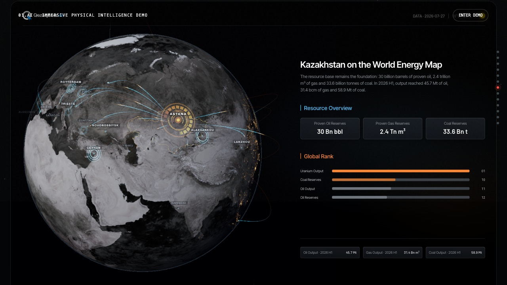
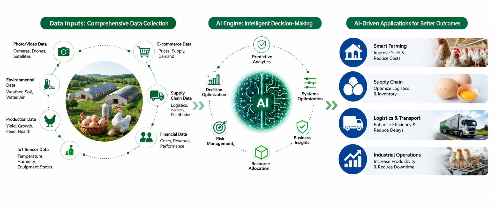
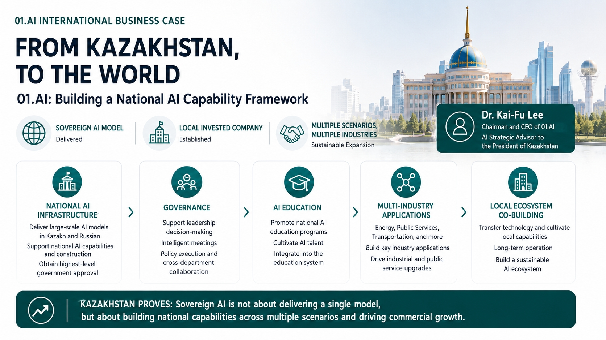
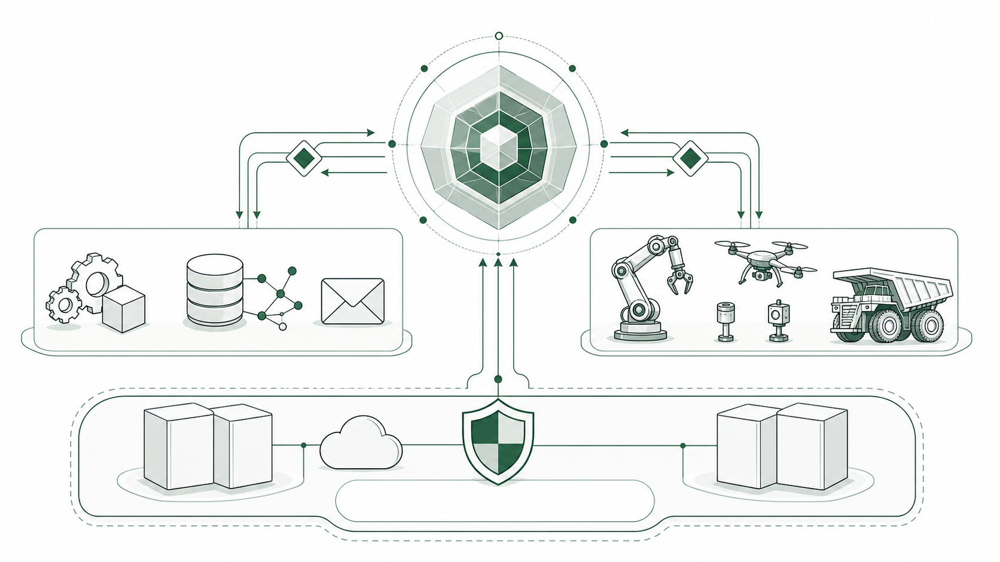
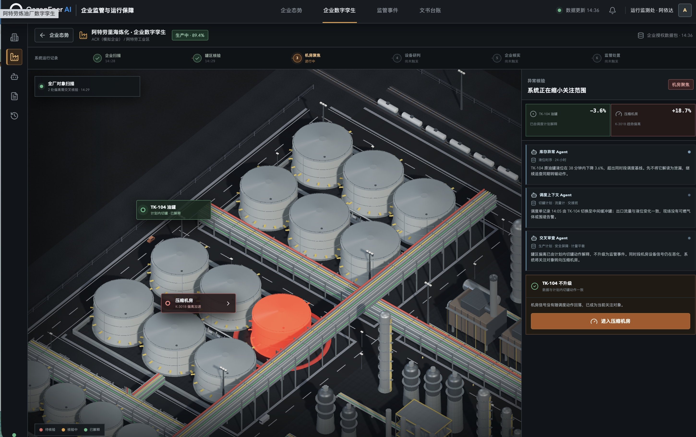

AI-native.
Not bolted on.
A workspace where AI runs the workflow — not a chat bolted on.

Energy digital twin
Operations context the agents can act on — not a bolted-on dashboard.

01 / COMPANY
An AI-native enterprise transformation company.
Founded in Beijing in May 2023, 01.AI combines top-down transformation strategy, frontier AI products, industry operating expertise and international delivery to move AI from isolated pilots into the decision and execution systems of the organization.
2023Founded in Beijing
Top-downExecutive-led transformation
GlobalEnterprise and sovereign delivery
ProductionFrom strategy to operating outcomes
FOUNDER · CHAIRMAN · CHIEF EXECUTIVE OFFICER
Dr. Kai-Fu Lee
- Founding President of Microsoft Research Asia; former President of Google China; executive roles at Microsoft, Apple and Silicon Graphics.
- Founder and Chairman of Sinovation Ventures; Ph.D. in Computer Science from Carnegie Mellon University; author of AI Superpowers.
- Invited to Kazakhstan's AI Development Council, chaired by the President.
- Current focus: agentic AI, CEO-led AI-native organizational change, and sovereign AI capability with sustainable commercial impact.
AI should not be delegated to an isolated technology team. It must be led by the top executive, connected to the P&L, and built into the decision and execution systems of the organization.
VICE PRESIDENT · INTERNATIONAL BUSINESS & AI CONSULTING
Dr. Ning Ning
- Leads 01.AI's international business development and AI consulting practice across governments, state-owned enterprises, global industrial groups and Fortune 500 companies.
- Ph.D. from the National University of Singapore, with 20+ years across AI research, enterprise technology, product strategy, solution architecture and international business.
- Experience spans sovereign AI, national AI platforms, executive AI, mining and logistics, agriculture, manufacturing, telecommunications, education and government transformation.
THE TEAM
Four capabilities rarely present in one organization.
Strategy consulting, operating-model transformation, industry advisory and large-programme delivery.
Frontier research, foundation models, enterprise software, cloud platforms, data systems and AI applications.
Practitioners from government, mining, manufacturing, agriculture, energy, logistics, finance, retail and education.
Multinational and multilingual teams bridging executive priorities, local realities, Chinese engineering capacity and global delivery standards.
02 / WHAT WE PROVIDE
Products, platforms and responsibility.
DECISION PRODUCTS
TrueNorth
Enterprise context and governed decision loops for executive, investment and commercial work. Explore each decision product in depth.
Boss AIExecutive operating intelligence: signals, decisions, commitments and verified outcomes.Explore Boss AI →
Investor AIEvidence-linked diligence, investment committee challenge and governed decision memoranda.Explore Investor AI →

TopSales AILiving opportunity context, quality decisions and coordinated Lead-to-Cash action.Explore TopSales AI →
ENTERPRISE AGENT PLATFORM
WorldWise
Build, validate, deploy and continuously improve enterprise Agents across governed data, models, workflows and existing systems.
TRANSFORMATION
AI Strategy & Design
Opportunity diagnosis, workflow redesign, ontology, governance, architecture and value measurement.
FORWARD-DEPLOYED ENGINEERING
FDE
Small, senior teams turn under-defined problems into adopted outcomes and leave customers with sustainable, reusable capability.
SOVEREIGN & INDUSTRY
Localized AI Systems
Local-language models, national capability, private deployment, physical operations and ecosystem co-building.
03 / PROOF
Three operating realities. One method.
See how 01.AI connects enterprise context, decisions and execution across knowledge work, physical operations and sovereign capability.

MINING & RESOURCES · INTEGRATED OPERATIONS
Mine–rail–port intelligence
For a global mining value chain, trusted operating data, dynamic scheduling and governed AI orchestration create one continuously coordinated system.
Trusted operating state→Coordinated decisions→Verified execution
- Unified people, asset and material data
- Continuous mine–rail–port replanning
- Operational evidence converted into reusable intelligence

AGRICULTURE · INTEGRATED VALUE CHAIN
From farm data to operating decisions
Multiple data sources feed an AI decision engine spanning smart farming, inventory, logistics and industrial operations.
Multi-source data→AI decision engine→Business applications
- Video, IoT, environment and production data
- Prediction, risk and resource optimization
- Applications across farming, supply chain and operations

SOVEREIGN AI · KAZAKHSTAN
Building national AI capability
Sovereign AI is not a single model. It is infrastructure, governance, education, multi-industry applications and a sustainable local ecosystem.
InfrastructureGovernanceEducationIndustryEcosystem
04 / THE PROBLEM WE SOLVE
AI must operate in two worlds.
One governed intelligence layer connects institutional decisions to digital workflows and physical execution—on infrastructure the customer can control.

Governed AI OrchestrationContext · Reasoning · Policy · Authority
Digital HandsApps · Data · Analytics · Communication
Physical HandsRobotics · Drones · Sensors · Equipment
Sovereign FoundationControlled compute · Data · Security · Edge
Sense the state→Form a bounded decision→Act through digital or physical systems→Verify the outcome
05 / COMPUTABLE BUSINESS CONTEXT
Ontology gives AI a map of the institution and the physical world.
People, assets, organizations, policies, events and measurements become governed business objects. Provenance and lineage show where each fact came from, what changed and which decisions depend on it.
GUIDED PRODUCT WALKTHROUGH
See evidence become connected, traceable context.
This walkthrough shows how an ontology links entities across unstructured evidence, preserves provenance and lets a user return from a relationship to the original source.
LIVE ONTOLOGY & LINEAGE WORKBENCH
Explore objects, relationships, provenance and schema health.
Objects→Relationships→Provenance→Dynamic context→Decision & action
06 / DECISION INTELLIGENCE DEMO
Leadership AI: from operating truth to accountable action.
Use the product directly below. Review daily priorities, open risk alerts, inspect evidence, move into execution tracking, prepare meetings and explore strategic scenarios — without leaving this page.
GUIDED PRODUCT WALKTHROUGH
See the decision lifecycle before entering the workspace.
Follow a management signal from evidence and risk analysis into meeting preparation, accountable execution and side-by-side scenario comparison.
07 / PHYSICAL INTELLIGENCE DEMOS
See the system. Narrow the anomaly. Dispatch action.
NATIONAL DIGITAL TWIN
Energy system intelligence
Global-to-national energy state, corridors, domestic operations and AI infrastructure.

REFINERY LIVE DIGITAL TWIN
Multi-agent anomaly verification
Move from whole-site scanning to asset-level evidence, eliminate explainable deviations and focus the real risk.
EMBODIED AI INSPECTION
Drone + Go2 field operations
Five drones scan 160 panels while five Go2 ground robots verify anomalies through live telemetry, FPV views, task orchestration and natural-language control.
08 / ENGAGE
Start with one consequential loop.
One executive decision or one physical operation. Build the context. Enter production. Prove the outcome. Then scale.
Align→Diagnose→Model→Build→Prove→Scale